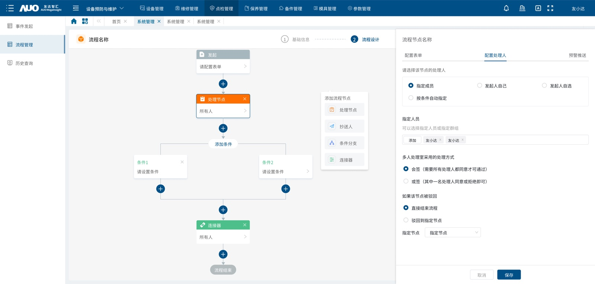

03 / 设备管理 / 2023.02–2023.12
EPMS 设备管理系统改版
面向制造企业的设备管理场景，参与设计覆盖设备、维修、点检、保养、备件、模具及参数管理的 B 端系统。
设备健康诊断监控看板
⌾设备信息
- 设备名称
- 0822001
- 设备编码
- 0822001
- 设备状态
- 空闲
- 设备位置
- 生产 01 车间
⌁健康诊断
● X 2.5 设备十分健康
● Y 2.5 建议持续观察
● Z 2.5 建议停机检查
震动原始分析
X-Y
1000005101520
X-Z
1000005101520
Y-Z
1000005101520
震动特征分析
X ⌄mean ⌄设备可能出现异常
需观察一段时间，建议持续观察设备电机
需观察一段时间，建议持续观察设备电机
诊断模型
| 序号 | 轴向 | 不平衡 | 轴弯曲 | 不对中 | 松动 | 油膜旋涡 | 油膜晃动 | 内环损伤 | 外环损伤 | 滚珠损失 | 气息不均 |
|---|---|---|---|---|---|---|---|---|---|---|---|
| 1 | X | 287.1 | 287.2 | 287.3 | 287.4 | 287.5 | 287.6 | 287.7 | 287.8 | 287.9 | 288.0 |
| 2 | Y | 288.9 | 289.0 | 289.1 | 289.2 | 289.3 | 289.4 | 289.5 | 289.6 | 289.7 | 289.8 |
| 3 | Z | 290.7 | 290.8 | 290.9 | 291.0 | 291.1 | 291.2 | 291.3 | 291.4 | 291.5 | 291.6 |
业务背景
设备台账、维护任务与处理记录分散，管理人员难以快速掌握设备状态和维护进度。
问题与目标
梳理设备预防维护流程与信息架构，建立覆盖关键设备管理任务的统一线上系统。
我的职责
参与核心模块的页面结构、原型和交互方案设计，负责设备状态、模具使用与产出明细等数据看板体验。
关键方案
- 梳理设备预防维护流程与信息架构，明确核心页面结构。
- 设计工单流程配置能力，覆盖事件发起、表单配置、处理人、条件分支与历史追溯。
- 通过数据看板帮助管理人员快速识别设备状态与维护任务。
DESIGN HIGHLIGHTS
设备管理核心页面展示

01 / 流程配置
可配置的工单处理流程
从流程总览、节点表单到条件分支、抄送人与处理人配置，完整呈现设备事件从发起到结束的处理逻辑。
成果
完成 EPMS 核心模块设计并支撑研发交付，帮助客户将设备台账、维护任务和处理记录统一纳入线上管理与追溯流程。